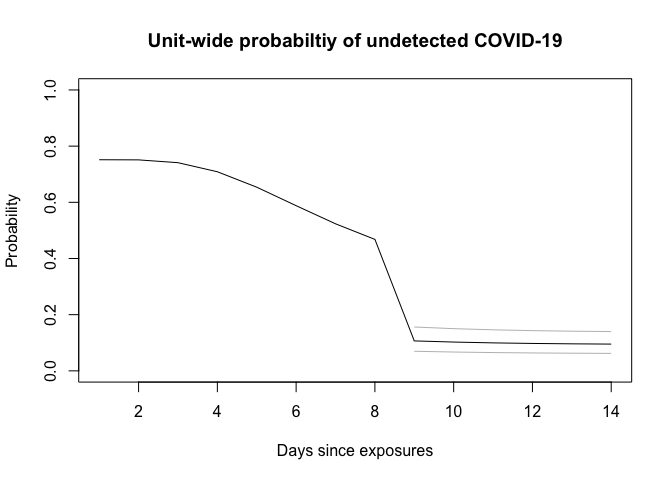

This package provides the functions, data and documentation that support a calculator to determine the probability of an undetected COVID-19 infection in a setting/unit after a potential exposure, testing, and when there are no symptomatic cases. For a detailed explanation of the rationale and implementation, please see the vignette.
Shiny
An interactive web app of this calculator is available.
Installation
You can install the latest version of covidprobability from Github with:
devtools::install.github("eebrown/covidprobability")Disclaimer
This is an exploratory model and may contain errors. Please see the vignette for assumptions and limitations of the model. It should not be relied upon for clinical decisions.
Example
library(covidprobability)
test_n <- unit_probability(test_day = 9, pre0 = 0.13, sens = sens, spec = 1,
asympt = 0.279, days = 0:14, mu = 1.63, sigma = 0.5,
n = 10)